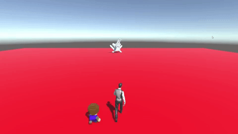

Seeing as this was my second ever game jam I didnt want to do something too much like my first.
I wanted this one to have new things to learn and hurdles to jump over. This time around I went
with a bit of a larger group, consisting of 6 people total. We all agreed that we wanted to challenge
ourselves in some way. Seeing as though we all had the same experience level since we were in the same grade
we decided to try something completely outside the box. At this point in time no one had any experience with
any kind of real commercial game engine. Because of this everyone agreed that we would dive strait into Unity
and just see how it goes. The theme was revealed as "It's Not a Bug it's A Feature" and we immeditely went to work
on brainstorming ideas for what we wanted to do. We knew that we wouldnt be able to do anything super crazy since
no one knew what they were doing, so we had to keep that in mind when thinking of ideas. With all that in mind
and the pressure of only 48 hours lingering over our heads we got to work.
My approach
After a bit of brainstorming we thought of something that seemed doable. Our idea was to basically start
out in a level that seemed relatively normal and as the player progressed the game would break more and more
visually and mechanically. Four of our six members (one of which included me) decided to all work on a level of the game.
The other two wanted to model and make assets for the game. In the end the list of contributions I made included:
entire second level, our level progression, player movment, enemy movement/logic, asset creation, repository
management and overall game flow logic.
That list may seem relatively short, esspecially when compared to the amount done in my first game jam. However,
the goal of this jam was not a high quality product, but instead to challenge ourselves and tackle something
brand new and see what we could do. With that came a very large amount of time spent researching things in Unreal
and even watching some tutorials on something related to what we were working on. Due to the volume of research, we
were all quite proud of how much were still able to accomplish in such a short period of time.

The video on the left above is a short snippit from our second level that I envisioned. This level is
the first step into the degradation that our game goes through as the player progresses. In this case
going from the first level which looks normal and the second which looks like things have lost their
textures and have been replaced with placeholder or low poly meshes. The video on the right is our final
level, essentially where the player has reached full on chaos and now has to fight the boss "bug" by
teaming up with the broken and original versions of the player.
Challenges Faced and Things Learned
By far the largest challenge of this project was an entire group of people diving in something we knew very little
about. Having to teach yourself as much as you can while also trying to help other people learn something new within
48 hours was quite the undertaking. Though I cant stress enough how beneifcial it feels afterwards. It feels amazing
knowing that you actually finished and accomplished what you set out to do even with the odds stacked against you.
It just made me better overall since being able to teach ones own self without being hand held is something that is
not only important but critical for a real world job. If you're on a team of developers doing anything then you have
to be able to fill in any blanks you may have in what your doing on your own without always relying on a lead to tell
you. And this project definitely made me better in that reguard.
The second largest takeaway from this project for me was working in the group environment as a whole. Working in that
group defintely made me better at, and feel more conformatble with, working on a group based project. Esspecially
since I was the person who managed the repository we all used. Since it was the first time working in Unreal that
also meant it was the first time using any kind of version control with a game engine. This brought about its own
challenges within the group senario because of how many times I had to fix merge errors and broken files that had
to be reverted. This was a constant battle during the project, but again it made me all the better at handling these
kinds of situations in group environments. I always make sure now to take as challenging a role as I can within a team
because of how beneficial it was to me my very first time doing so on this project.
How to check out the project?
The game is up on my GitHub for you to download if you'd like to check it out!